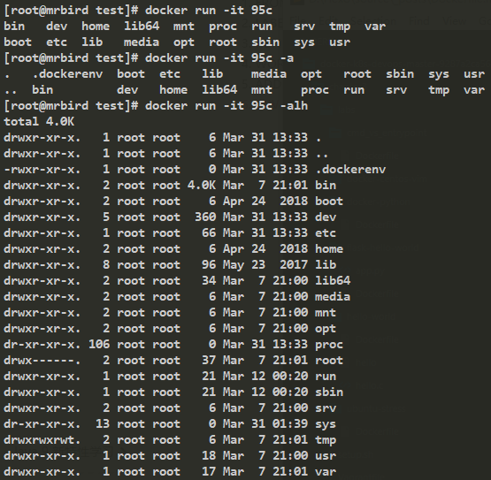

在 Docker 镜像与容器 一节中我们通过Dockerfile构建了镜像，这节我们来了解下Dockerfile的语法。Dockerfile包含了诸多关键字，所以要学习Dockerfile的用法，得先从这些关键字入手。
FROM
位于Dockerfile开头，表示基于什么镜像构建：
1 | FROM scratch # 制作base image |
出于安全考虑，最好使用官方的image作为base image。
LABEL
Dockerfile的元数据，描述作用。
1 | LABEL version="1.0" author="mrbird" description="dockerfile demo" |
Dockerfile最好都要有元数据，这样更易于理解。
RUN
运行命令，每次run都会生成一个图层，所以最好将命令合并:
1 | FROM ubuntu |
\换行
WORKDIR
用于指定工作目录，切换路径：
1 | FROM ubuntu |
输出 /test/demo。
最好不要用RUN cd来切换目录，而使用WORKDIR，这样可以减少不必要的图层，尽量使用绝对目录。
ADD & COPY
ADD 和COPY都可以将构建环境中的文件或目录复制到镜像中，比如
1 | WORKDIR /demo |
1 | WORKDIR /demo |
最终都会将test文件添加到/demo/test/目录下。
区别：
ADD 添加的文件是压缩文件的话，会自动解压。
COPY 只能复制构建目录下的文件，ADD可以添加一个构建上下文中的文件或目录，也可以是一个URL，如：
1 | ADD http://wordpress.org/latest.zip / |
ENV
设置环境变量常量。
1 | ENV MYSQL_VERSION 5.7 |
通过设定常量，可以提高可维护性。
VOLUME & EXPOSE
存储和网络，这里先略，后面学习到这一块再说。
CMD
设置容器启动后默认执行的命令和参数。
docker run指定了其他命令，CMD命令会被忽略。
定义了多个CMD，只有最后一个有效。
比如有如下Dockerfile：
1 | FROM ubuntu |
构建镜像，运行：
1 | docker run [image] |
输出 hello mrbird。
如果运行：
1 | docker run -it [image] /bin/bash |
则没有输出。
ENTRYPOINT
设置容器启动时运行的命令。
不会被忽略，一定会执行。
一般写一个shell脚本作为ENTRYPOINT。
比如mongodb官方Dockerfile末尾一段：
1 | COPY docker-entrypoint.sh /usr/local/bin/ |
ENTRYPOINT和CMD结合使用有一个技巧：
比如有如下一个Dockerfile：
1 | FROM ubuntu |
意思是在ubuntu这个镜像上构建，通过ENTRYPOINT运行/bin/ls命令，然后CMD []这行可以介绍额外的参数选项。
通过这个Dockerfile构建镜像后(image id为95c35bb00761)，分别运行下面这些命令来创建容器：

可以看到我们通过相同的镜像构建出了不同的容器。
Shell和Exec格式
在Dockerfile中，命令的写法有Shell格式和Exec格式：
Shell格式的Dockerfile如下：
1 | RUN apt-get install -y vim |
Exec格式如下所示:
1 | RUN ["apt-get","install","-y","vim"] |
在使用Exec格式的时候需要注意和常量的搭配使用问题，比如在Shell格式下：
1 | FROM ubuntu |
创建镜像，运行容器后输出：hello mrbird。
但是在Exec格式下：
1 | FROM ubuntu |
创建镜像，运行容器后输出：hello $name。
正确的写法是:
1 | FROM ubuntu |